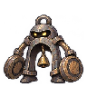
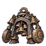

No.099
カネロ
晶 通常
体の中の空洞が足音を深く響かせる。仲間は音の高さで互いを見分ける。
基本データ
| 図鑑番号 | No.099 |
|---|---|
| タイプ | 晶タイプ |
| 進化 | Lv.24でカネドラに進化 |
| 入手方法 | 反響の石窟（Lv.8〜11）の草むらに出現。 |
Lv.50の能力値
| 体力 | 279 | |
|---|---|---|
| 物理攻撃 | 162 | |
| 物理防御 | 111 | |
| 特殊攻撃 | 165 | |
| 特殊防御 | 110 | |
| 素早さ | 118 | |
| 命中 | 97 | |
| 回避 | 99 |
冒険中の能力値はレベルに応じて上がります。オンライン対戦の通常レンタルはLv.50で統一されます。
覚える技
| 技 | タイプ | 分類 | 威力 | 命中 | PP | 効果 |
|---|---|---|---|---|---|---|
| 鉱脈の回帰 | 晶 | 物理 | 39 | 87 | 15 | 与えたダメージの25%を吸収する。 |
| 鉱粒の瞬き | 晶 | 特殊 | 23 | 99 | 30 | 小さな鉱石のきらめきを弾く。 |
| 炉心の和音 | 灯 | 物理 | 41 | 91 | 15 | 炉の奥で育った熱い和音を放つ。 |
| 多面の帳 | 晶 | 防御 | — | — | 15 | 幾つもの光の面を重ね、次の攻撃を半減する。 |
進化の系譜
- カネロLv.24 ▶

カネドラ
タイプ相性
晶タイプの技は風タイプに強く（1.5倍）、風タイプの技を受けると効果が大きくなります。同じタイプの技を使うと威力が1.15倍になります。